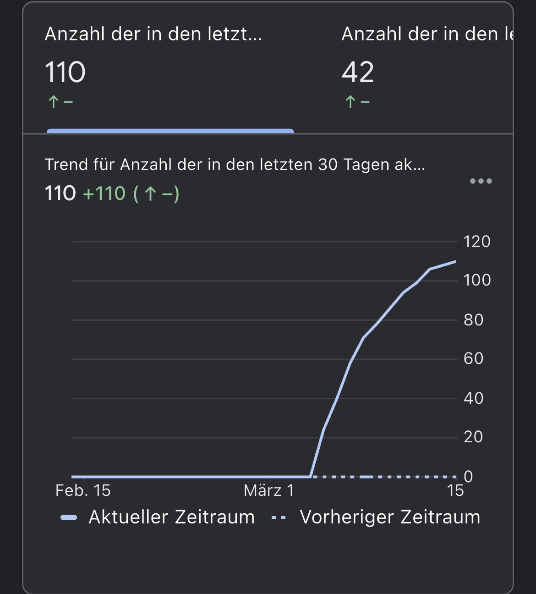
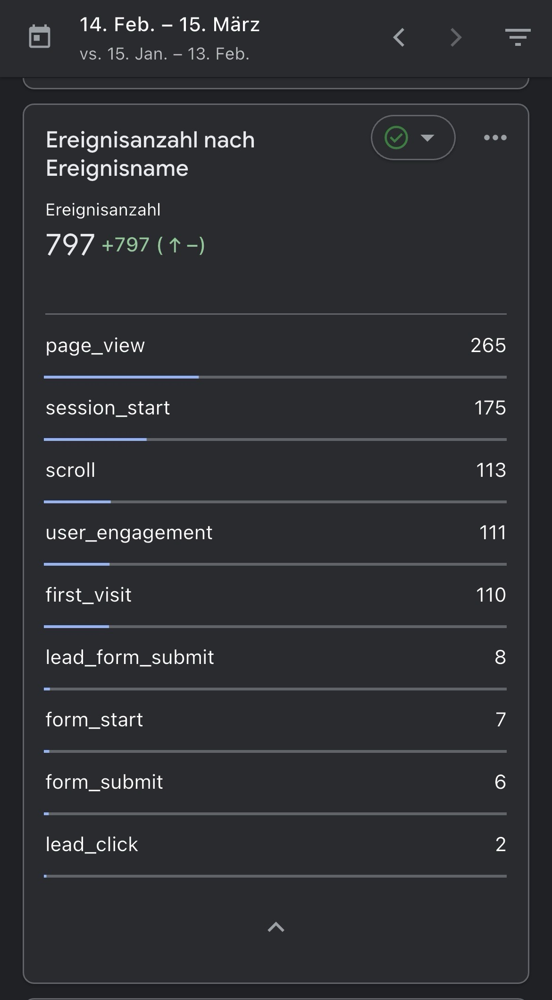

Messbare Website Ergebnisse
Eine moderne Website kann mehr als nur gut aussehen. Mit der richtigen Struktur, SEO und klarer Nutzerführung kann eine Website Besucher gewinnen, Vertrauen aufbauen und neue Kundenanfragen generieren.
300+
Mögliche Seitenaufrufe durch Google Suchanfragen, lokale SEO Optimierung und strukturierte Inhalte.
150+
Potenzielle Besucher monatlich durch organischen Traffic und lokale Suchmaschinen Ergebnisse.
100+
Neue Nutzer können eine Website entdecken, wenn Inhalte richtig indexiert werden.
erste Kunden
Kontaktformulare, WhatsApp Buttons und klare Call-to-Actions sorgen für neue Anfragen.
Website Performance & Nutzerentwicklung
Eine moderne Website sollte nicht nur gut aussehen, sondern echte Ergebnisse liefern. Analytics Daten zeigen, wie Besucher mit einer Website interagieren und ob sie Kontakt aufnehmen.
Besucherentwicklung
Nach dem Launch einer neuen Website steigt der Traffic oft schrittweise an, wenn Inhalte von Google indexiert werden und Besucher über Suchanfragen auf die Website gelangen.
Nutzerinteraktion
Scrolls, Klicks und Engagement zeigen, wie Besucher mit einer Website interagieren und welche Inhalte besonders relevant sind.
Kontaktaktionen
Kontaktformulare, WhatsApp Buttons oder direkte Anfragen sind ein klares Zeichen dafür, dass eine Website potenzielle Kunden erreicht.
SEO Struktur
Optimierte Inhalte helfen dabei bei Google und KI-Suchsystemen sichtbar zu werden und langfristig Besucher zu gewinnen.
Website Analytics Beispiele
Beispiele für mögliche Website Entwicklungen, Traffic Daten und Besucherstatistiken nach dem Launch einer neuen Website.


Eine Website die Kunden bringt
Viele Unternehmen haben Websites, die kaum Besucher generieren. Eine moderne Website mit klarer Struktur, SEO Optimierung und professionellem Design kann langfristig neue Kunden bringen.
Website Projekt starten